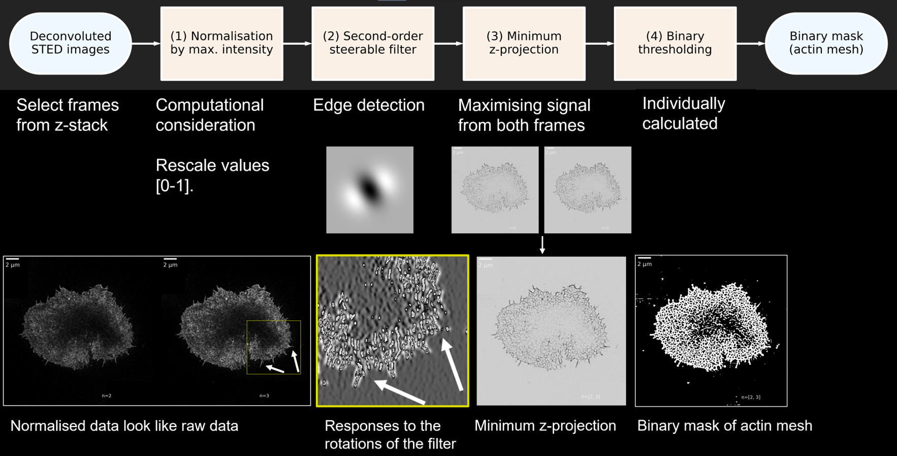
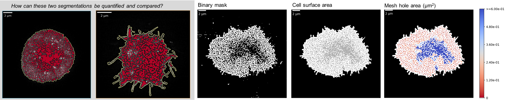
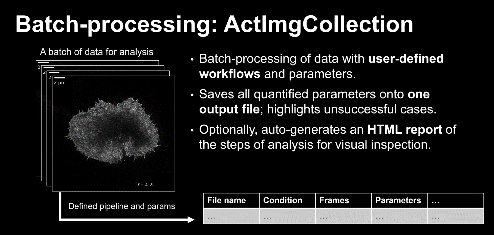

Actin Meshure
MSci Extended Research Project | Simoncelli group
London Centre for Nanotechnology | UCL

In this exciting project, I was tasked with analysing a large data set of about 100 super-resolution microscopy images of labelled actin primary and CAR (chimeric antigen receptor) T cells in contact with an activating surface. The actin cytoskeleton is thought to play an integrative role in immunological synapse (IS) formation at the interface between T cells and antigen presenting cells (APCs). Actin remodelling is thought to facilitate the biochemical and spatio-temporal integration of signalling at the synapse. The images taken with a STED (stimulated emission depletion) microscope were fascinating, as they revealed the dense actin mesh close to the IS interface and slightly deeper into the cell. My task was to quantify this mesh.
Aims and objectives
- Quantify the actin dynamics in cells after different activation times.
- Build a reproducible, installable, and documented Python pipeline
The dataset
Each TIFF file consisted of about 10-14 frames, where different planes of the contact surface were imaged. We selected several (1-4) frames closer to the contact surface (basal mesh) and deeper into the cell (cytoplasmic mesh). These were analysed with the following semi-automated pipeline.
The analysis pipeline
ActinMeshure, as the name suggests, is an image processing tool which aids the manipulation and processing of super-resolution images of the actin mesh in activated lymphocytes. ActinMeshure be used the measure (please, excuse the pun) parameters of interest in the segmented meshes. To demonstrate how ActinMeshure was designed and applied, I will introduce the different classes and how they were applied to my data set. This pipeline was based on Fritzsche et al., Sci. Adv.3, e1603032 (2017); however, it was adapted and streamlined into a single analysis environment in Python.
The ActImg class: Segmenting the mesh
I have made a lay graphical summary of the analysis pipeline used to segment the actin mesh from the deconvoluted microscopy data. The first step of the data analysis was to obtain a binary mask, where all pixels belonging to the actin mesh were labelled with 1, and background was 0. This was achieved in highly heterogeneous images with a dynamic range of four orders of magnitude.
The ActImgBinary class: Quantifying the mesh
Having segmented the mesh, the binary mask could now be used to obtain estimates of relevant parameters. I was able to implement functions which could quantify the percentage actin mesh density as well as different measure of the size of all individual holes in the mesh, or a summary, such as the median.
This step is crucial, as this is where all the insight about the mesh structure and actin dynamics is extracted. If at the segmentation stage above, it was key to avoid introducing artifacts, now the question is how the image can be "summarised" or "measured" using suitable parameters for appropriate statistical testing. For instance, look at the two cells in the gray box below: how can they be compared reliably? This is where the parametrisation comes in. An example of measuring the hole area is shown on the right below.
The ActImgCollection class: Batch-processing data
Finally, applying this pipeline individually to data from 100 images from different treatments and conditions would have been tedious. I implemented a class which could aid the batch-processing of data. This class could interactively set up a pipeline and appropriate hyperparameters (given as function arguments); handle all relevant meta-data for every entry, provided as an excel spreadsheet; and provide a table and/or graphical (HTML-based) summary of the intermediates for every analysed image for manual inspection.
Conclusion and future work
This was a challenging but rewarding project. Extracting the maximum amount of biologically relevant and quantitatively accurate information from super-resolution microscopy images is non-trivial. There are many caveats, and introducing bias is easy. Nevertheless, documenting one's work, making it accessible and reproducible is how standards can be set in the community regarding the best techniques and algorithms to apply to bioimage data.
Currently, there are limited parameters which can be quantified from the images, and they are all related to the mesh density through hole size. However, more advanced analyses could consider the spatial distribution of the holes or count the number of actin protrusions, as these protrusions are believed to have important signalling functions. Overall, the challenge is to devise analysis techniques which truly leverage the information content of the super-resolution data.
To conclude, this was the first standalone tool I created on my own. I tried to follow best practices in software engineering: writing unit tests, validating inputs for functions, flagging invalid input with appropriate errors and warnings. I created a documentation page for the project which I published on Read the Docs. As of the publication of this page, I am still working on polishing the tool's functionalities and adapting it to use with more diverse data types, finishing the documentation, and increasing the test coverage, so that when future extensions of this core toolbox are implemented, they can be plugged in seamlessly.